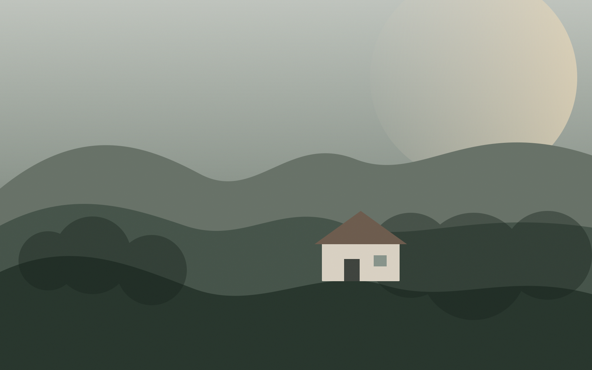

Roteiro 01
Sem pressa
Café, centro, uma boa mesa e tempo livre.

Uma cidade organizada ao redor da sua viagem: lugares, experiências, rotas e memórias que fazem sentido para o seu momento.
Não é uma lista de “melhores”. É uma leitura visual da cidade por contexto, ritmo e intenção.

Tempo, companhia, transporte, interesses e clima ajudam a combinar a cidade sem transformar a viagem em agenda rígida.
Montar o meuCafé, centro, uma boa mesa e tempo livre.

Mirantes, natureza e deslocamentos curtos.
Cultura, produção local e pequenas descobertas.
A inteligência funciona nos bastidores. Você continua decidindo, movendo, trocando e deixando espaços livres quando quiser.